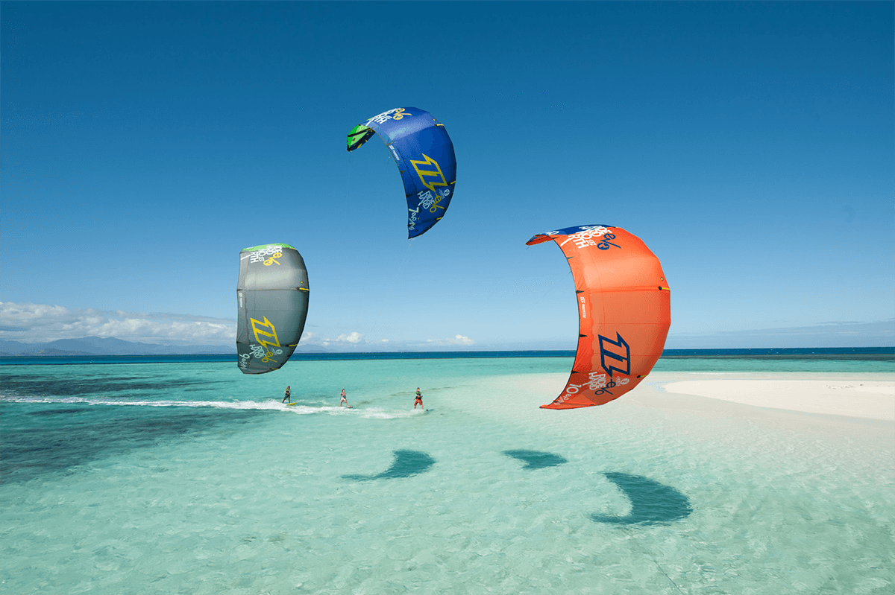

ZANZIBAR BY STAR TOURS
Zanzibar is the name of an archipelago in the Indian Ocean 25–50 km off the coast of East Africa, which is part of Tanzania.
The archipelago consists of numerous small islands and two large ones: Unguja (the main island, sometimes informally referred to as ‘Zanzibar’), and Pemba Island. The archipelago was once the separate state of Zanzibar, which united with Tanganyika to form Tanzania (derived from the two names), and still enjoys a high degree of autonomy within the union. The capital of Zanzibar, located on the island of Unguja, is Zanzibar City. The city’s old quarter, known as Stone Town, is a World Heritage Site.
Zanzibar’s main industries are spices, raffia, and tourism. In particular, the islands produce cloves, nutmeg, cinnamon, and black pepper. For this reason, the Zanzibar Archipelago is sometimes referred to locally as the “Spice Islands”.
Zanzibar is the home of the endemic Zanzibar red colobus, the Zanzibar servaline genet, and the (possibly extinct) Zanzibar leopard.
The word Zanzibar came from Arabic zanjibār (زنجبار [zandʒibaːr]), which is in turn from Persian zangbâr (زنگبار [zæŋbɒːɾ]), a compound of Zang (زنگ [zæŋ], “black”) + bâr (بار [bɒːɾ], “coast”). the Sea of Zanj. The name is one of several toponyms sharing similar etymologies, ultimately meaning “land of the blacks” or similar meanings, in reference to the dark skin of the inhabitants.